- 196țări, câte o mașină pentru fiecare
- 23vehicule, dintre care 4 se deblochează
- 14moduri de joc, inclusiv carieră, raliu și creator de etape
- 8limbi în joc și în documentație
Totul pornește dintr-un seed
Fără cod împrumutat, fără artă împrumutată. Motorul, imaginile și muzica sunt originale și se construiesc la începutul fiecărei etape.
Lumi generate
Nouăsprezece peisaje, de la pădure și deșert la arbori-lume, insule plutitoare, tundră cu aurore și o citadelă neon, plus încă șase lumi, posibile și imposibile. Fiecare etapă înlănțuie patru dintre ele.
Sunet procedural
Coloana sonoră și sunetul motorului, cu trepte de viteză, vânt și ploaie, sunt sintetizate în timp ce conduci.
Vreme și suprafețe
11 feluri de vreme, 6 suprafețe și patru momente ale zilei schimbă aderența, vizibilitatea și aspectul: ploaie, viscol, polei, câmp de lavă, mlaștină.
Unsprezece moduri
Campanie, contra cronometru, nesfârșit, oră de vârf, vânătoare de sfere, slalom printre inele, inversare, blackout și zen, plus un rival condus de calculator sau un prieten pe ecran împărțit.
Carieră și raliu
Diviziile de la Bronz la Diamant, cupe cu runde eliminatorii de la cea națională până la Cupa Mondială și un raliu în cinci etape, de la zori la noapte.
Provocarea zilei și coduri
Aceeași etapă pentru toți, în fiecare zi, cu un cod scurt al rezultatului pentru comparație, coduri de etapă și seed-uri de partajat și o fantomă a celei mai bune curse.
Rang și joc sănătos
Un rang de la 0 la 999 ajustează dificultatea. Se numără seria de zile, o reamintire sugerează o pauză după o sesiune lungă, iar un mesaj spune când e destul pentru azi.
Făcut să fie accesibil
Filtre pentru daltonism, asistențe de condus, mod lent, interfață mare și control de la tastatură, atingere, gamepad sau înclinare.
Se joacă singur
--demo (nativ) pune un pilot AI să conducă toate modurile pe toate nivelurile de dificultate, etapă după etapă. Mașina demo e protejată și nu se salvează nimic. În browser: adaugă ?demo la adresă.
Pauză și mod calm
Esc pune etapa pe pauză.
19 clase de vehicule și 4 vehicule de serviciu
Fiecare clasă păstrează livrea țării tale și adaugă un compromis propriu între viteză, aderență, lățime, rezistență și ceas. Vehiculele cu două roți sunt înguste și fragile, autobuzele, tractoarele și monster truck-urile sunt late și rezistente, iar monopostul de formulă este cel mai rapid și cel mai fragil.
Clase
Vehicule de serviciu
Orașe care aplică regulile
Fiecare etapă traversează orașe cu bulevarde, trotuare și treceri de pietoni. A conduce bine contează mai mult decât a conduce repede.
Multiplicator de conducere corectă
Semafoare, pietoni, limite
Semafoarele trec prin verde, galben și roșu, pietonii traversează și se aplică o limită de viteză.
Poliția te urmărește
Trecerea pe roșu, depășirea vitezei sau neacordarea priorității cheamă poliția. Pe Ușor, o amendă costă timp. Lovirea unui pieton costă timp și avarii.
Conducerea corectă se plătește
Oprirea la roșu, acordarea priorității și respectarea limitei aduc scor, timp și un multiplicator de până la x3. Orice abatere întrerupe seria.
Vehicule de urgență
Ambulanțele și autospecialele de pompieri depășesc cu girofarurile pornite. Dacă le lași să treacă ești răsplătit; dacă le blochezi, e abatere.
Ambuteiaje și ocoluri
O coloană oprită lasă un culoar șerpuit, iar intrarea în ea înseamnă accident. O bretea spre dreapta înainte de ambuteiaj duce pe o stradă liberă.
Locul accidentului
Un elicopter aterizează pe drum când te apropii, lângă o ambulanță și o autospecială de pompieri. Banda din dreapta e blocată, iar cea din stânga rămâne liberă.
Misiuni, poligon, parcări
Ia un colet sau un pasager și du-l la rampă înainte să expire timpul. Pantele, inelele de slalom, o rampă și parcările plătesc fiecare câte un bonus.
Citește drumul din HUD
RadarMap se rotește odată cu tine. Arată drumul din față, orașele, semafoarele, ambuteiajul în roșu și ocolul în verde, cu timpul de traversare a ambuteiajului pe drumul principal față de timpul pe ieșire.
Ilustrație desenată pentru această pagină, nu o captură de ecran. În joc, etichetele RadarMap (MAIN, EXIT, CITY, DETOUR) urmează limba aleasă.
Câștigă vehiculele de serviciu
Alte patru vehicule așteaptă în spatele unor obiective, iar la ele ajungi conducând bine.
Mașină de poliție
10 orașe parcurse corect
Ambulanță
8 livrări
Autospecială de pompieri
3 provocări zilnice și 4 bonusuri de poligon sau parcare
Elicopter
Celelalte trei vehicule și încă 7 provocări zilnice
Vehiculele de serviciu pot încălca regulile, iar traficul le face loc. Elicopterul zboară peste trafic și aterizează când are viteză mică.
Campionate, pluton și garaj
Dincolo de o singură etapă, e un sezon întreg de făcut.
Campionate și tururi
7, 10 sau 15 etape, sau turul de opt etape al unei țări, partajat cu un singur cod scurt TCC1.
Un pluton pe șosea
8–16 rivali vizibili, grilă de start, grilă inversată și tur de calificare, cu bonus de podium.
Bifurcații și urmărire
Ruta rapidă la stânga, cea panoramică la dreapta, elicopterul arată drumul; mașina de poliție urmărește un fugar cu nume.
Garaj
Monedele cumpără îmbunătățiri de motor, cutie, anvelope și turbo. Provocările zilnică și săptămânală folosesc mereu mașina de serie.
Provocarea săptămânii și fantome
Fiecare săptămână aduce un modificator nou; exportă fantoma ca text și întrece-te cu a unui prieten.
Ecran împărțit pentru 3 sau 4
Doi sau mai mulți oameni împart ecranul, iar calculatorul completează locurile goale.
Douăsprezece etape curate
Etape alese, cu traseu fix, vreme și oră a zilei: le listezi cu --showcase, rulezi una cu --showcase N sau deschizi versiunea web cu ?showcase=N.
Totul se reglează pe pagina EXTRAS a ecranului de start: stiluri de muzică, mph, scheme de taste, pluton, ecran împărțit, garaj și un câmp de cod pentru campionate, etape, fantome și cuvinte de vopsea. Testat doar cu șoferi simulați; sunetul și dispozitivele reale nu au fost încercate.
Mic, deschis și offline
TURBOCURSA este software liber sub licență MIT. Îl poți citi, rula și modifica.
Rust
Motor original în Rust. Biblioteca de bază nu are dependențe la rulare, iar randarea este exclusiv software: 640x400, fără GPU.
WebAssembly
Versiunea web este un singur fișier HTML offline, cu comenzi tactile, selector de limbă și cel mai bun rezultat personal.
Nativ
O versiune pentru desktop, cu moduri pentru 2 jucători și provocarea zilei, pornită din linia de comandă:
cargo run --release --features native --bin turbo -- --daily8 limbi
Engleză, română, franceză, italiană, spaniolă, portugheză, germană și maghiară, în joc și în documentație.
Licență MIT
Fără cod, resurse sau mărci de la vreun joc existent. Fără legătură cu vreun joc comercial.
Comenzi
Săgeți sau WASD pentru direcție, Space pentru turbo, Enter pentru reluare, M pentru mut. Jucătorul 2: WASD și Shift stânga.
Descarcă și instalează
Joacă în orice browser, instalează-o ca aplicație dintr-un clic sau rulează versiunea nativă în Rust pe calculator. Totul gratuit, fără cont.
Varianta HTML, orice browser
Un singur fișier care funcționează offline: îl deschizi cu dublu clic. Butonul de instalare apare în browserele care îl acceptă.
Chrome
Edge
Brave, Opera
Firefox
Safari
Samsung Internet
Aplicația nativă, scrisă în Rust
macOS
⤓ Apple Silicon⤓ IntelInstalare dintr-o linie
curl -fsSL https://turbocursa.chiuta.ro/install.sh | shLinux
⤓ x86-64 .tar.gz⤓ x86-64 · glibc 2.35⤓ x86-64 · glibc 2.31Instalare dintr-o linie
curl -fsSL https://turbocursa.chiuta.ro/install.sh | shToate fișierele ultimei versiuni
Ultima versiune: …
⤓ Cod sursă (zip)Sau compilează-l singur cu Rust:
cargo install --git https://github.com/chiuta/TurboCursa --features native,audio --bin turboCapturi la fiecare rezoluție
Aceleași scene din joc, randate la 640×400 și mărite clar la Full HD, 2K, 3K, 4K și 8K.
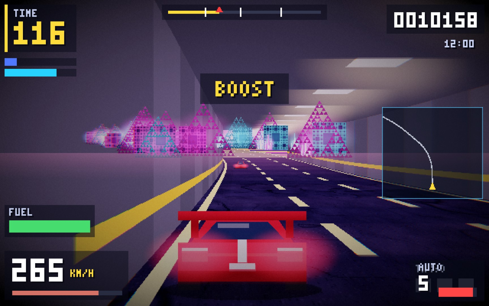
Detaliu mărit
Același loc din imagine la fiecare rezoluție, la pixelii lui reali. Apasă pe o imagine ca s-o deschizi la dimensiunea ei.
Imaginile mari sunt limitate la 1920 px lățime, iar detaliile la 864 px; originalele mai mari se obțin cu opțiunea de rezoluție a jocului. Jocul se randează mereu la 640×400, iar mărirea nu adaugă detalii noi, doar margini mai curate.
Vehicule speciale în trafic
Pe drum și pe cer apar douăzeci și nouă de vehicule speciale.
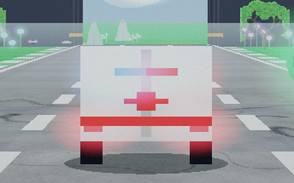
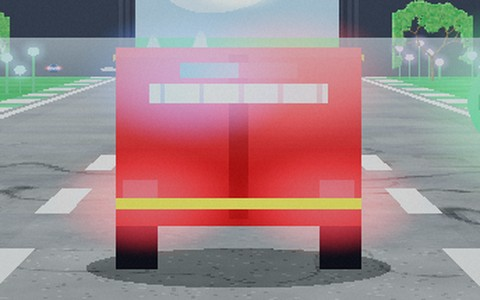
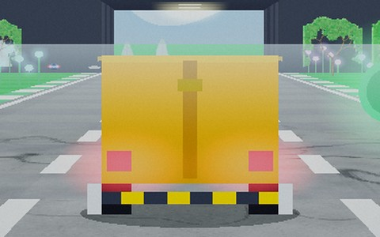
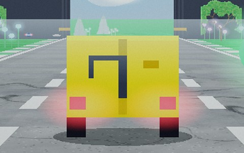
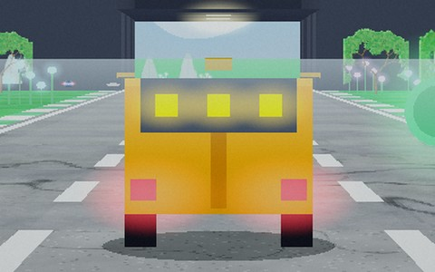
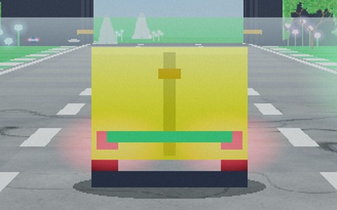
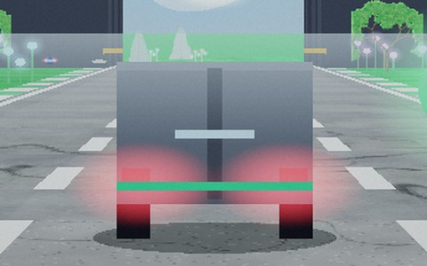
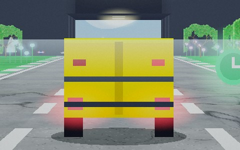
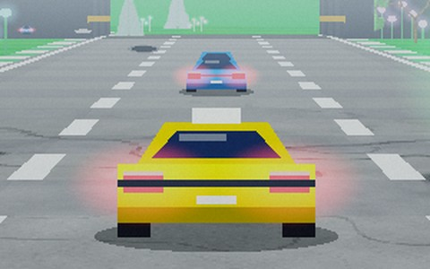
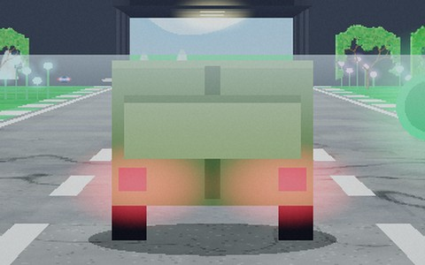
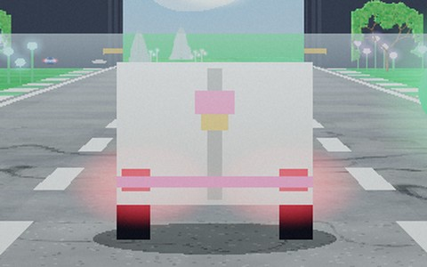
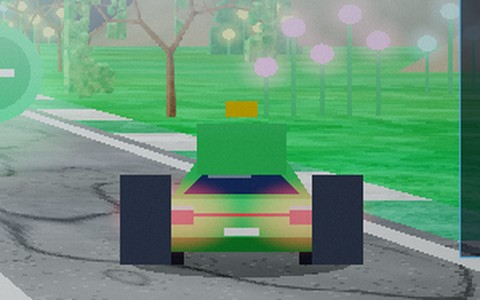
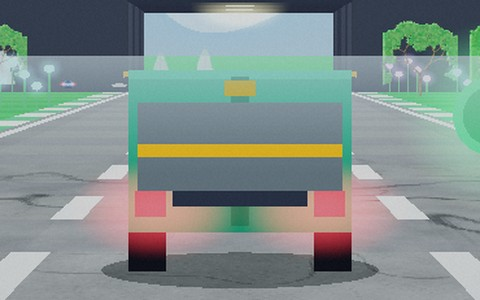
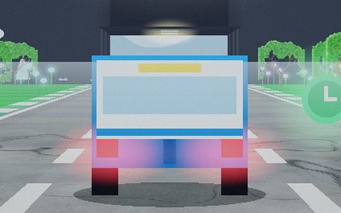
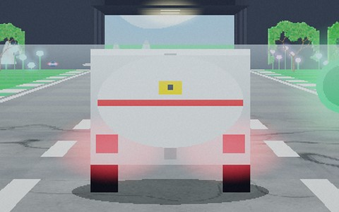
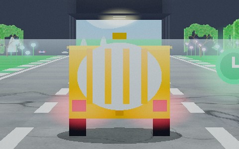
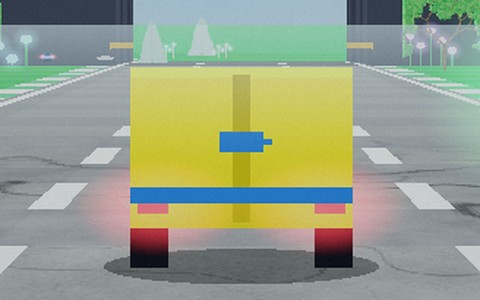
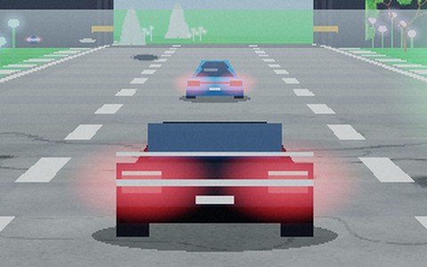
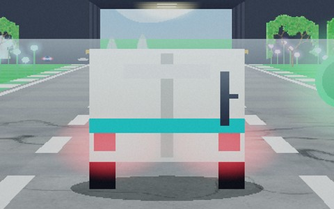
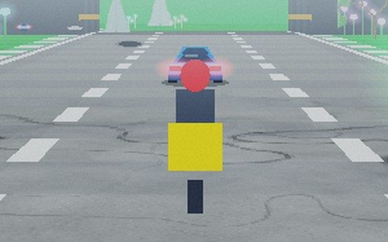
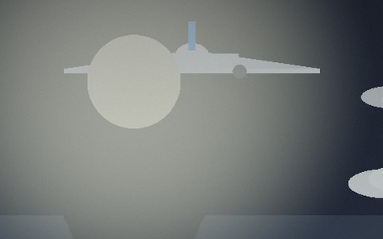
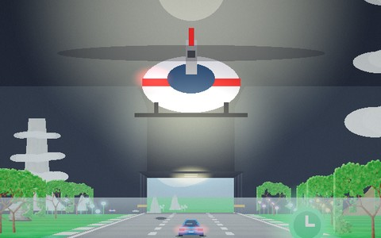
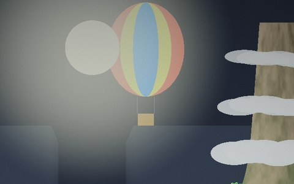
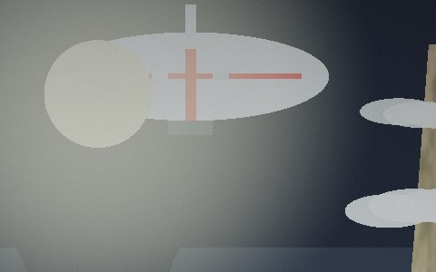
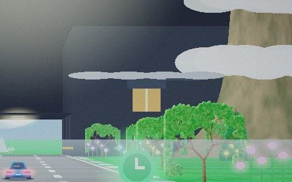
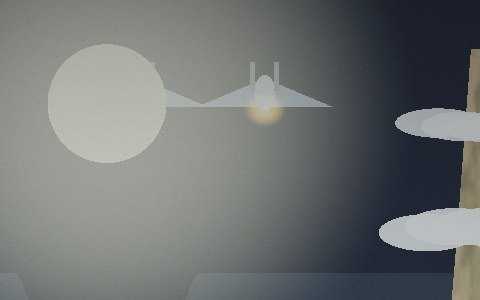
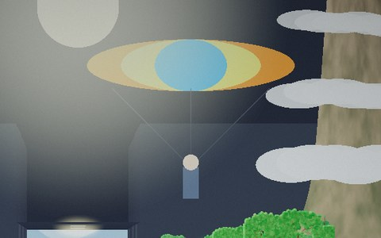
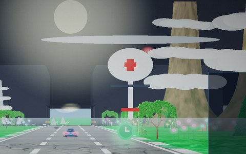
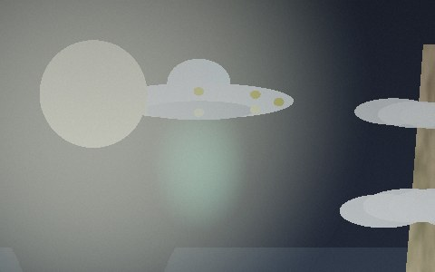
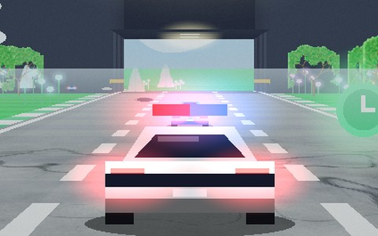

Imaginile sunt randate direct la 1728×1080, din spate, pe un drum de oraș senin.
Vezi-l în acțiune
Două înregistrări reale de ecran, cu subtitrări în 8 limbi: apasă butonul CC pentru a alege una.
Înregistrările arată pagina reală, ieșirea reală a instalatorului și jocul real din browser.
Cum stă față de alții, sincer
Am comparat TURBOCURSA, în noiembrie 2026, cu jocurile de curse pseudo-3D open-source și comerciale pe care le-am găsit. Faptele vin din pagini publice; verdictele sunt ale noastre și, fiindcă noi am scris codul, citește-le cu această rezervă.
- Unde câștigă: licență MIT și nicio resursă de la alt joc (Cannonball cere ROM-urile originale, iar nucleul lui libretro este necomercial; javascript-racer este un mic tutorial), același cod pentru desktop și browser, 8 limbi, un binar de circa 2,5 MB și circa 200 de teste automate.
- La moduri e la egalitate cu jocurile retro comerciale: carieră, campionate, tururi pe țări, provocări zilnice și săptămânale, raliu, ecran împărțit pentru 3–4 jucători, fantome, un designer de etape și douăsprezece etape curate.
- Unde pierde: imaginea și grafica. Imaginea de bază este 640×400 mărită, iar vehiculele sunt forme simple, departe de finisajul din Slipstream sau de aspectul 4K din Horizon Chase.
- Unde pierde: dovezile. Un singur autor și prima lansare în noiembrie 2026, fără testeri din afară, în timp ce jocurile comerciale au mii de recenzii de la jucători și ani de reglaj.
- Unde pierde: etapele și muzica. Cele mai multe etape sunt generate dintr-un seed, iar titlurile comerciale vin cu zeci de trasee proiectate manual și coloane sonore compuse; a noastră e sintetizată și nu a fost ascultată pe boxe reale.
- Fără legătură cu vreun joc sau vreo marcă comercială; nu a fost copiat niciun cod, nicio resursă și nicio marcă.
Auditul pentru versiunea 1.20.0 a rulat teste cu intrări ostile peste fiecare etapă și clasă de vehicul și a găsit două defecte reale: o vedere mai mică de 16×10 pixeli bloca randarea, iar o poziție NaN a sirenei putea strica mixajul stereo. Ambele sunt reparate și acoperite de teste.
Limite recunoscute
Aceasta este versiunea 1.20.1. Iată ce nu a fost încă demonstrat.
- Echilibrul a fost reglat doar cu șoferi simulați și teste automate, nu cu jucători reali.
- Sunetul stereo, sirenele (poliție, salvare, pompieri) și elicopterul au fost verificate doar pe semnal generat, nu ascultate pe boxe reale. Modurile Full HD, 2K, 3K, 4K și 8K sunt mărimi clare ale imaginii 640×400, nu randare nativă, iar viteza lor pe ecrane reale nu a fost măsurată.
- Etichetele RadarMap sunt în engleză în toate limbile, iar numele țărilor din meniuri sunt doar în engleză.
- Versiunea web a rulat cu motorul WebAssembly real doar în Chromium fără interfață, nu pe telefoane reale. Sunetul nativ nu a fost ascultat pe un dispozitiv real.
- Pe calculatoare mai lente versiunea nativă poate coborî sub 60 fps, iar versiunea din browser nu a fost măsurată.
- Cele douăsprezece etape curate diferă intenționat, dar nimeni în afară de autor nu le-a jucat. Comparația cu alte jocuri se sprijină pe pagini web publice citite în noiembrie 2026 și pe testele noastre: nu am jucat titlurile comerciale.
Pornește prima etapă
Un clic, fără instalare. Alege un vehicul, alege un nivel, condu.